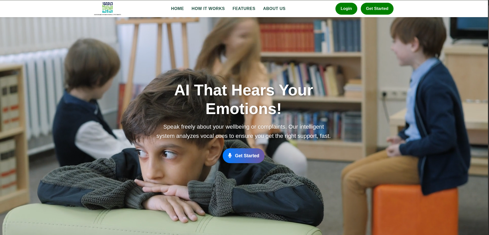
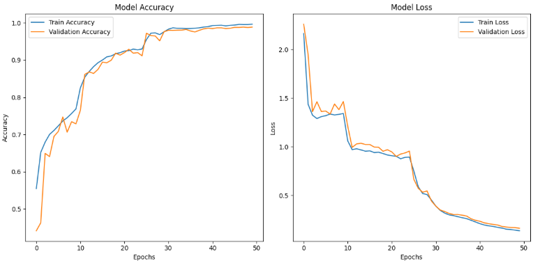

Emotion-Aware AI Complaint Management System
1. Project Overview
The Emotion-Aware AI Complaint Management System represents a pioneering voice-based application meticulously engineered to significantly enhance student well-being within educational institutions. This innovative platform provides university students with a secure and intuitive channel to articulate their concerns through voice recordings. These recordings undergo sophisticated analysis utilizing a deep learning-driven emotion recognition model, which accurately identifies the speaker's underlying emotional state.
By discerning emotional cues such as anger, fear, sadness, happiness, or neutrality, the system intelligently assesses the inherent urgency of each complaint. This assessment facilitates the automatic classification of complaints into distinct priority levels. For instance, a complaint imbued with emotions indicative of distress, such as anger or fear, is automatically escalated to a high-priority status. This proactive flagging mechanism empowers university counselors, administrators, and relevant support staff to initiate prompt, informed, and empathetic interventions, thereby fostering a more responsive and supportive academic environment.
Core Functional Modules:
The system is architected on a robust modular framework, with each module meticulously designed to execute a critical function within the complaint management lifecycle:
- Voice Capture & Submission: Facilitates the seamless recording and uploading of audio complaints via a user-friendly web interface, ensuring accessibility and ease of use for all students.
- Audio Preprocessing & Feature Extraction: Employs advanced digital signal processing techniques to clean and normalize raw audio data. This includes noise reduction and the extraction of salient acoustic features crucial for accurate emotion detection.
- Emotion Recognition Engine: Leverages a sophisticated Convolutional Neural Network (CNN) model, rigorously trained on diverse and extensive emotional speech datasets (including RAVDESS, CREMA-D+, and TESS), to precisely identify and classify emotions from processed speech signals.
- Intelligent Complaint Prioritization: Dynamically categorizes incoming complaints into predefined priority tiers (e.g., High, Medium, Low) based on the intensity and nature of the detected emotional content, ensuring critical issues receive immediate attention.
- Real-Time Alerting & Notification System: Implements an efficient notification mechanism that dispatches instant alerts to designated university personnel (e.g., counselors, administrative staff) for complaints identified as high-priority, enabling rapid response.
- Automated Report Generation: Generates comprehensive, detailed PDF reports for each processed complaint. These reports encapsulate critical information such as transcription, emotion scores, confidence levels, and relevant user metadata, serving as invaluable documentation for follow-up actions.
- Security & Access Management: Incorporates stringent security protocols and access control mechanisms to safeguard sensitive student information. This ensures that only authorized individuals (e.g., students for their own complaints, administrators for oversight) can access and manage data, maintaining privacy and compliance.
Ultimately, this system endeavors to bridge the communication gap between students' emotional states and institutional responsiveness. It is particularly beneficial for individuals who may find traditional complaint submission methods challenging or intimidating. By offering a non-intrusive, intelligent, and empathetic platform, the Emotion-Aware AI Complaint Management System empowers universities to proactively address mental health challenges, mitigate potential crises, and cultivate a safer, more inclusive, and supportive learning environment for their entire student body.
2. System Architecture: Modular Design for Scalability and Efficiency
The Emotion-Aware AI Complaint Management System is meticulously engineered with a modular architecture, a design philosophy chosen to ensure unparalleled scalability, maintainability, and seamless integration across all operational components. The system is logically segmented into seven distinct core modules, each assigned specific responsibilities within the comprehensive end-to-end complaint analysis and management workflow.
Architectural Components and Workflow:
- Voice Input Collection Module:
This module serves as the primary interface for user interaction. Students can effortlessly upload their audio complaints through a dedicated web-based portal. The module is designed to accommodate various audio formats (e.g.,
.wav,.mp3,.ogg), ensuring broad compatibility and preparing the raw audio data for subsequent processing stages. - Audio Preprocessing & Feature Extraction Module:
Upon receipt of an audio input, this module initiates a sophisticated preprocessing pipeline. Key operations include:
- Noise Reduction: Advanced algorithms, leveraging spectral flatness and RMS thresholds, are applied to minimize background noise and enhance audio clarity.
- Segmentation: Audio streams are intelligently segmented into manageable 2.5-second chunks, optimizing them for efficient processing by the emotion detection model.
- Feature Extraction: Critical acoustic features are extracted to represent the emotional content of the speech. These include:
- MFCC (Mel-Frequency Cepstral Coefficients): Captures the spectral envelope of the sound, mimicking human auditory perception.
- ZCR (Zero Crossing Rate): Indicates the rate at which the speech signal changes sign, providing insights into the noisiness and tonality.
- RMSE (Root Mean Square Energy): Measures the short-term energy of the audio signal, reflecting loudness and intensity.
These extracted features are subsequently standardized and encoded, ensuring a consistent and optimized input format for the machine learning model.
- Emotion Detection Engine (CNN-Based):
At the very core of the system's intelligence lies a highly optimized Convolutional Neural Network (CNN). This CNN model has been rigorously trained on a diverse array of emotional speech datasets (e.g., RAVDESS, TESS, CREMA-D+), enabling it to accurately process the preprocessed audio features. The output of this module is a probabilistic distribution across predefined emotion categories, including angry, sad, fear, happy, and neutral, providing a nuanced understanding of the speaker's emotional state.
- Emotion Intensity-Based Complaint Classification Module:
Leveraging the primary emotion detected by the CNN, this module automatically assigns a priority level to each complaint. The classification logic is as follows:
- High Priority: Typically assigned to complaints associated with intense emotions such as anger or fear, necessitating immediate attention.
- Medium Priority: Often linked to neutral emotional states, indicating a standard processing urgency.
- Low Priority: May be assigned to complaints with emotions like happiness, suggesting a less urgent or positive feedback context.
This intelligent classification mechanism directly influences the urgency and subsequent response actions undertaken by institutional staff.
- Alert and Notification System:
An integrated, real-time alerting mechanism is a critical component, designed to ensure that high-priority complaints are immediately brought to the attention of designated university counselors or administrators. All notifications are securely stored within the system and are readily accessible via a dedicated administrative dashboard, providing a comprehensive audit trail.
- Automated Report Generation and Visualization Module:
For every processed complaint, this module automatically generates a comprehensive PDF report. Each report is a detailed compendium of information, including:
- Student metadata (anonymized where appropriate)
- Precise complaint timestamp
- Detailed emotion scores and confidence levels
- Accurate audio transcription
These reports are securely saved on the server and can be downloaded by authorized users, facilitating offline analysis, record-keeping, and accountability.
- Security and Privacy Enforcement Module:
This module implements robust security measures to ensure the confidentiality, integrity, and availability of all sensitive data. Key features include:
- Authentication: Strict authentication protocols ensure that only authorized users (students for their data, administrators for system oversight) can access the platform.
- Session Management: User sessions are securely managed using Flask-Login, preventing unauthorized access and session hijacking.
- Data Encryption: Sensitive information is encrypted both in transit and at rest, providing an additional layer of protection.
- Access Control: Granular access control mechanisms restrict data visibility and functionality based on user roles.
- Audit Trails: Comprehensive logging ensures data integrity and provides an auditable record of all system interactions.
System Integration Overview:
The system's various components are seamlessly integrated to form a cohesive and efficient application:
- Backend: Developed using the Flask micro-framework, responsible for handling HTTP requests, managing API logic, facilitating database interactions, and executing machine learning model inference.
- Frontend: Constructed with standard web technologies (HTML, CSS, JavaScript) and Jinja templating, providing a dynamic, responsive, and intuitive user interface.
- Database: PostgreSQL serves as the robust and scalable relational database, securely storing user profiles, complaint records, model results, and comprehensive system logs.
- Deployment Readiness: The modular architecture inherently supports containerization (e.g., Docker), enabling straightforward and consistent deployment across various cloud platforms such as Heroku, Render, or AWS, ensuring high availability and scalability in production environments.
System Architecture Diagram

Use Case Diagram

Activity Diagram

System Flow Diagram

3. Technology Stack: Robust and Scalable Foundations
The development of the Emotion-Aware AI Complaint Management System is underpinned by a carefully selected, robust, and modular technology stack. This stack integrates cutting-edge web development tools, advanced audio processing libraries, powerful machine learning frameworks, and scalable deployment capabilities, ensuring the system's high performance, reliability, and future extensibility. Below is a detailed breakdown of the key technologies employed across different layers of the system architecture:
Frontend Technologies: Crafting an Intuitive User Experience
- HTML5: Serves as the foundational markup language, providing the semantic structure for the web interface. Its modern features ensure cross-browser compatibility and accessibility.
- Tailwind CSS: A highly efficient, utility-first CSS framework utilized for rapidly designing responsive and visually consistent user interfaces. Its atomic classes enable precise styling with minimal custom CSS, promoting maintainability and scalability of the frontend design.
- JavaScript: The primary scripting language powering the interactive and dynamic elements of the platform. It facilitates real-time input validation, asynchronous form submissions, and enhances overall user engagement through dynamic content manipulation.
- Chart.js: An open-source JavaScript library specifically integrated for data visualization. It is employed to render aesthetically appealing and highly informative graphs, effectively visualizing emotion detection results and complaint trends, thereby providing actionable insights at a glance.
Backend Technologies: Powering Core System Logic
- Python: The core programming language chosen for server-side development, machine learning model inference, and overall system integration. Python's extensive ecosystem and readability contribute to rapid development and maintainability.
- Flask: A lightweight yet exceptionally powerful micro-web framework. Flask is instrumental in handling HTTP requests, defining API routes, managing server-side logic, and rendering dynamic HTML templates, providing a flexible and efficient backend foundation.
- Flask-Login: An essential extension for Flask applications, dedicated to managing user authentication, maintaining secure user sessions, and implementing robust access control mechanisms for both student and administrative roles, ensuring data security and role-based access.
- SQLAlchemy: Functions as the Object Relational Mapper (ORM), providing a powerful and flexible interface for interacting with the database. SQLAlchemy abstracts away raw SQL queries, allowing developers to work with Python objects, which streamlines database operations and enhances code readability and maintainability.
Machine Learning & Audio Analysis: The Intelligence Core
- TensorFlow: The leading open-source machine learning framework used for building, training, and deploying the Convolutional Neural Network (CNN) model. TensorFlow's robust capabilities enable efficient development and serving of the speech emotion recognition engine.
- scikit-learn: A comprehensive machine learning library employed for various preprocessing tasks. Specifically, it is used for feature standardization (e.g.,
StandardScaler) to normalize data distributions and label encoding (e.g.,OneHotEncoder) to prepare categorical data for model training. - Librosa: A powerful Python library specifically designed for audio and music analysis. Librosa is extensively utilized for extracting critical speech features, including Mel-Frequency Cepstral Coefficients (MFCCs), zero-crossing rate, spectral features, and Root Mean Square Energy (RMSE), which are vital inputs for the emotion recognition model.
- PyDub: A simple yet effective Python audio manipulation library. PyDub is used to handle various audio format conversions, ensuring compatibility across different input sources and maintaining consistency for model processing.
- Noisereduce: An audio processing library dedicated to applying spectral noise reduction techniques. Its integration significantly improves audio clarity by minimizing background noise, thereby enhancing the accuracy and reliability of emotion predictions.
Database Layer: Persistent Data Management
- PostgreSQL: A highly reliable, open-source, and advanced relational database management system. PostgreSQL is chosen for its robust capabilities in securely storing all application data, including user information, detailed complaint records, machine learning detection results, and comprehensive system logs. Its strong support for complex queries, data integrity, and scalability makes it an ideal choice for this application.
Deployment & Scalability: Ensuring Operational Excellence
- Docker-Compatible: The application's architecture is inherently designed with containerization principles in mind. This compatibility enables seamless packaging and deployment using Docker containers, ensuring environmental consistency from development to production and simplifying deployment workflows.
- Cloud Extensible: The system is built to be fully compatible with major cloud computing platforms, including Amazon Web Services (AWS) and Google Cloud Platform (GCP). This extensibility allows for flexible and scalable hosting solutions, efficient model serving, and robust database integration in high-demand production environments.
4. Model Details: Deep Learning for Speech Emotion Recognition
The analytical core of the Emotion-Aware AI Complaint Management System is a sophisticated deep learning-based Speech Emotion Recognition (SER) model. This model has been meticulously designed and rigorously trained to accurately identify and interpret emotional cues embedded within voice inputs, ensuring high precision and reliability in its predictions. Below is a comprehensive overview of the model’s architecture, its training methodology, and key technical specifications.
Dataset Integration: Comprehensive Training for Robustness
To ensure the model's ability to generalize across diverse vocal characteristics and emotional expressions, it has been trained on a synergistic combination of three widely recognized and emotionally rich speech datasets:
- RAVDESS (Ryerson Audio-Visual Database of Emotional Speech and Song): Provides a broad spectrum of emotional expressions from professional actors.
- CREMA-D+ (Crowd-sourced Emotional Multimodal Actors Dataset): Offers a diverse range of emotional speech from various demographic backgrounds.
- TESS (Toronto Emotional Speech Set): Contributes clear and distinct emotional utterances, enhancing the model's ability to differentiate subtle emotional nuances.
The integration of these datasets collectively contributes to a balanced and comprehensive representation of emotions across variations in gender, age, and speaking style. This multi-dataset approach significantly enhances the model's generalization capabilities, making it robust to real-world variations in speech.
Emotion Classes: Targeted Emotional Categorization
The model is engineered to classify audio inputs into the following five primary emotional categories, which were strategically selected for their direct relevance in assessing distress levels and stability within student complaints:
- Sadness
- Anger
- Fear
- Happiness
- Neutrality
Model Architecture: 1D Convolutional Neural Network (CNN)
The emotion classifier is built upon a 1D Convolutional Neural Network (CNN) architecture. This specific design is optimally suited for processing time-series data, such as audio signals, due to its inherent ability to capture temporal dependencies and local patterns. The architecture is designed to be lightweight yet sufficiently expressive to discern intricate temporal patterns and acoustic features within speech.
- The 1D-CNN layers are responsible for extracting spatial features from sequential audio frames, effectively learning hierarchical representations of the input.
- These convolutional layers are followed by dense (fully connected) layers, which perform the final classification. A softmax activation function is applied to the output layer, yielding probabilistic scores for each emotion category.
This optimized architecture ensures rapid inference times while maintaining exceptional precision in emotion classification.
Performance Metrics: Validated Accuracy and Robustness
- Test Accuracy: The model consistently achieves an approximate accuracy of 99% on the validation set. This high performance metric underscores its excellent generalization capabilities to unseen and real-world audio data.
- Evaluation Metrics: Comprehensive evaluation of the model's performance across different emotion categories is conducted using standard metrics, including:
- Accuracy: Overall correctness of predictions.
- Precision: The proportion of true positive predictions among all positive predictions.
- Recall: The proportion of true positive predictions among all actual positive instances.
- Confusion Matrix: Provides a detailed breakdown of correct and incorrect classifications for each emotion class, offering insights into potential misclassifications.
Feature Extraction: Capturing Acoustic Nuances
To effectively capture the subtle and overt emotional characteristics embedded within speech, the model leverages a set of carefully selected acoustic features:
- MFCCs (Mel-Frequency Cepstral Coefficients): These coefficients encode the power spectrum of speech on a non-linear Mel scale, closely mimicking the human auditory system's perception of sound. They are highly effective in representing the timbre of speech.
- ZCR (Zero Crossing Rate): This feature quantifies the rate at which the speech signal changes its sign. It is a strong indicator of the noisiness and tonality of the speech, often correlating with the energy and pitch of the utterance.
- RMSE (Root Mean Square Energy): Represents the short-term energy of the audio signal. It is a crucial feature for indicating the loudness and overall energy of the voice, which can be indicative of emotional intensity.
These extracted features undergo standardization using a pre-fitted scaler to ensure a consistent input format, which is then fed into the deep learning model for emotion classification.
Audio Processing & Chunking: Handling Variable Inputs
- Incoming audio inputs are systematically preprocessed and segmented into uniform 5-second chunks. This standardized chunking is vital for consistent model input.
- Each segment is analyzed independently by the emotion recognition model. The predictions from individual chunks are then aggregated, significantly enhancing the overall robustness and temporal consistency of the emotion detection for longer or variable-length audio inputs. This technique effectively mitigates performance degradation often associated with unconstrained audio durations.
Evaluation
The accuracy plot demonstrates a clear upward trend for both training and validation datasets over 50 epochs. Initially, the model showed rapid improvement, reaching over 90% accuracy by epoch 15. From epochs 20 to 50, both curves stabilize above 95%, indicating consistent learning with no significant overfitting. By the final epoch, training accuracy approaches 0.99, and validation accuracy mirrors this trend closely, demonstrating excellent generalization capability.
5. Setup and Installation: Getting Started Locally
This section provides comprehensive instructions for setting up and running the Emotion-Aware AI Complaint System on your local development environment. Please follow these steps carefully to ensure a smooth installation process.
1. Clone the Repository
Begin by cloning the project repository from GitHub to your local machine using the following command:
git clone https://github.com/saky-semicolon/Emotion-Aware-AI-Support-System.git
cd Emotion-Aware-AI-Support-System2. Install Required Python Dependencies
It is highly recommended to create a dedicated Python virtual environment to manage project dependencies. This prevents conflicts with other Python projects on your system. Execute the following commands:
python3 -m venv venv
source venv/bin/activate # On Windows, use `venv\Scripts\activate`
pip install -r requirements.txtThis will install all necessary Python libraries listed in the requirements.txt file.
3. Install FFmpeg
FFmpeg is an essential tool for audio processing within the system. Install it globally on your system. For Debian/Ubuntu-based systems, use:
sudo apt update
sudo apt install ffmpegFor other operating systems, please refer to the official FFmpeg documentation for installation instructions. Verify the installation by running:
ffmpeg -versionEnsure the command executes successfully and displays version information.
4. Configure PostgreSQL Database
The system utilizes PostgreSQL as its primary database. Ensure PostgreSQL is installed and running on your machine. Then, perform the following database configurations:
- Create a new database for the application (e.g.,
fyp). - Create a dedicated PostgreSQL user with appropriate privileges for this database (e.g.,
flask_user). - Configure your environment variables or update the
config.py(if present) or.envfile with your database credentials. An example.envconfiguration is shown below:
DB_NAME=fyp
DB_USER=flask_user
DB_PASSWORD=your_password
DB_HOST=localhost
DB_PORT=5432Replace your_password with the actual password for your PostgreSQL user.
5. Apply Database Migrations
After configuring the database, apply the latest database schema changes using Flask-Migrate (or similar tool, if configured differently in the project):
flask db upgradeThis command will synchronize your database schema with the application's models.
6. Launch the Application
With all dependencies installed and the database configured, you can now launch the Flask development server:
python run.pyThe application will typically become accessible at http://127.0.0.1:5000 in your web browser.
6. API Reference: System Endpoints
The Emotion-Aware AI Complaint Management System exposes a set of RESTful API endpoints to facilitate interaction with its core functionalities. Below is a detailed reference for each primary endpoint, including its purpose, HTTP method, and expected behavior.
| Endpoint | Method | Purpose | Request Body / Parameters | Response |
|---|---|---|---|---|
/api/predict |
POST |
Upload an audio file for emotion prediction. | multipart/form-data with an audio file (e.g., audio.wav) |
JSON object containing predicted emotion, confidence scores, and transcription. |
/api/respond |
POST |
Submit feedback or responses related to a complaint. | application/json with fields like complaint_id, response_text, user_id. |
JSON object indicating success or failure of the submission. |
/download_report/<id> |
GET |
Download the comprehensive emotion analysis report for a specific complaint. | Path parameter: id (unique identifier of the complaint). |
PDF file of the report. |
/admin/* |
GET |
Access various administrative dashboards and manage complaints. | (Requires authentication and appropriate admin roles) | HTML content of the admin dashboard or specific management interface. |
All API endpoints are designed to be RESTful and primarily accept standard application/json or multipart/form-data formats where applicable, ensuring broad compatibility with client applications.
7. Student-Side Features: Empowering Student Voice and Well-being
The interface of the Emotion-Aware AI Complaint Management System has been thoughtfully designed to provide an accessible, intuitive, and emotionally supportive experience. Each component is crafted with the understanding that students may be in vulnerable emotional states when accessing the system, requiring interfaces that promote comfort, trust, and ease of use.
1. Homepage: Creating a Welcoming Digital Environment
The Homepage serves as the initial point of interaction, offering a welcoming and emotionally sensitive interface tailored for students. It emphasizes clarity, accessibility, and visual calmness to ensure users—especially those in distress—can navigate comfortably.

Key Highlights:
- Emotionally Aligned Aesthetics: Incorporates a soft, calming color palette and an emotionally resonant background (image or video) to create a safe and supportive atmosphere. The design principles prioritize psychological comfort and visual accessibility.
- Motivational Messaging: Features a bold and empathetic headline such as "AI That Hears Your Emotions", reinforcing the system's mission to prioritize student well-being and creating an immediate sense of understanding and support.
- Intuitive Navigation: A fixed navigation bar allows quick access to essential sections such as Home, How It Works, Features, Login, and Get Started. The navigation is strategically positioned to reduce cognitive load and enhance user experience.
- Accessibility First: Designed with responsiveness and inclusivity in mind—ensuring compatibility across devices and screen readers, with proper color contrast and keyboard navigation. This ensures the platform is usable by students with diverse abilities and technical setups.
- Clear Call to Action: Prominent buttons like "Get Started" guide students toward submitting complaints or exploring the platform further, providing clear pathways for engagement without overwhelming the user.
2. Registration Page: Secure and User-Friendly Onboarding
The Registration Page provides a secure and structured process for new users to create an account. It simplifies onboarding through a well-designed form layout and real-time user feedback, ensuring that the initial interaction with the system is positive and confidence-building.

Core Features:
- Comprehensive Form Fields: Students are required to provide key academic and personal details, including Full Name, Student ID, AIU Email, Department, Academic Year, Gender, Phone Number, and upload a Profile Picture. This comprehensive approach ensures proper identification and personalization while maintaining necessary institutional connectivity.
- Live Validation: Built-in form validation ensures data accuracy, particularly for email formats, password confirmation. Real-time feedback helps prevent errors and reduces frustration during the registration process.
- Interactive User Guidance: Each form element is accompanied by tooltips, placeholder instructions, and error messages to help students complete the form confidently. This supportive approach reduces anxiety and increases successful completion rates.
- Security Measures: Passwords are masked with an optional toggle for visibility and confirmed with matching input fields to reduce errors. This balance between security and usability ensures account protection while maintaining ease of use.
This intuitive and visually cohesive interface ensures that the registration process is seamless, efficient, and trustworthy, especially for first-time users navigating an emotionally sensitive system. The design prioritizes user comfort and confidence-building from the very first interaction.
3. Login Page and Student Dashboard: Secure Access and Personalized Experience
The Login Page and Student Dashboard together form the core of the user's personalized experience within the Emotion-Aware AI Support System. These modules ensure secure access, emotional transparency, and intuitive navigation across all system features.

Login Page
The Login Page provides a clean, secure, and efficient authentication mechanism for both students and administrators. Built with simplicity and responsiveness in mind, it ensures smooth access while maintaining a professional aesthetic.
Key Features:
- User-Friendly Interface: Clean layout with minimal distractions, optimized for all devices. The design maintains visual consistency with the overall system aesthetic while prioritizing ease of use.
- Input Fields: Secure fields for entering email and password, backed by real-time client-side validation. Form validation provides immediate feedback to prevent common input errors and improve user experience.
- Navigation Links: Includes quick-access links to Register for new users and Admin Login for system administrators. This clear role-based navigation prevents confusion and streamlines the authentication process.
Student Dashboard
Once logged in, users are greeted with a personalized dashboard that acts as a central hub for emotional insights and system interaction. It provides a real-time snapshot of the student's emotional analysis, complaint status, and access to additional services.
Key Features:
- Emotion Visualization: Emotion detection results are presented using ApexCharts in bar chart format with emojis representing dominant emotional states. This visual approach makes complex emotional data immediately understandable and engaging.
- Interactive UI: Emotion bars are color-coded by intensity (e.g., red for anger, blue for sadness) and dynamically update based on recent submissions. The interactive elements provide immediate visual feedback and encourage user engagement.
- Sidebar Navigation: A consistent sidebar enables seamless access to Chatbot, Profile Management, Complaint Status, and PDF Reports. This persistent navigation ensures users can efficiently move between different system functions.
- Live Feedback Loop: Students can view past complaints, emotional trends, and system feedback in real-time, fostering engagement and self-awareness. This feature promotes emotional literacy and helps students track their well-being over time.
Together, the Login Page and Student Dashboard ensure that every student not only enters the platform securely but is also empowered with actionable emotional insights and intuitive system interaction. The dashboard serves as a comprehensive command center where students can monitor their emotional journey, access support resources, and engage with the system's AI-powered features in a meaningful way.
4. User Profile Management: Personalized and Secure Information Control
The User Profile Management feature allows students to maintain and update their personal and academic information securely. It ensures that the platform stays aligned with the user's current data while providing a personalized experience throughout their interaction with the system.

Key Features:
- Editable Information: Users can update essential fields such as full name, email, academic year, department, phone number, and other relevant personal details. This flexibility ensures that student information remains current and accurate.
- Secure Update Workflow: Includes clearly defined "Edit," "Save Changes," and "Cancel" options to prevent accidental modifications and ensure intentional updates. This careful design protects against data loss and unauthorized changes.
- Consistent Display: Updated profile information reflects across the entire platform — including reports, complaint logs, and administrative views — ensuring system-wide consistency and accuracy in all student interactions.
5. Emotion-Aware Complaint Interface: AI-Powered Empathy
This is the core innovation of the system — an intelligent interface that interprets the emotional state of a student through their voice input. By leveraging a CNN-based speech emotion recognition model, the system classifies and prioritizes complaints with empathy and precision, ensuring that student distress is properly identified and addressed.

Key Features:
- Real-Time Emotion Detection: Captures user speech and processes it through advanced machine learning algorithms to identify underlying emotional tones such as anger, sadness, fear, happiness, and neutrality. This capability enables the system to understand not just what students say, but how they feel.
- Dual Input Modes: Users can either type or record voice messages depending on their preference and comfort level. This flexibility ensures accessibility for students with different communication preferences or abilities.
- Priority Tagging: Based on the detected emotion, the system automatically assigns a priority level to ensure appropriate response urgency:
- 🔴 High Priority : For emotions like anger, fear, or distress that may indicate urgent student needs
- 🟡 Medium Priority : For neutral or uncertain emotional expressions requiring standard attention
- 🟢 Low Priority : For calm or non-urgent tones that can be addressed through regular channels
- Simulated Conversational Agent: The chatbot interface responds with empathetic and supportive replies, enhancing user trust and comfort. This feature helps students feel heard and supported throughout their interaction with the system.
6. Complaint Status and Withdraw Complaints
The Complaint Submission & Status module empowers students to file grievances in their own voice and keep track of their resolution in a transparent and structured format. It ensures that users are always informed about the progress of their submissions while maintaining complete visibility into the complaint lifecycle.

Key Features:
- Complaint Tracking Table: Displays a comprehensive list of submitted complaints with essential metadata such as ID, submission date, and current status. This organized view helps students maintain awareness of all their interactions with the system.
- Status Indicators: Each complaint is labeled with a clear status tag — Open, In Progress, or Resolved — represented with visually distinctive color badges for quick recognition. This visual system reduces cognitive load and provides immediate understanding of complaint progress.
- Search & Filter: Users can quickly locate specific complaints using a dynamic search bar that filters by complaint submission date.
- Viewing Replies: Students can view the responses from the administration regarding their complaints, ensuring transparency and ongoing communication throughout the resolution process.
- Withdraw Complaints: Students have the option to withdraw their complaints if they feel it is no longer necessary. This feature allows for flexibility and control over their submissions, ensuring that students can manage their grievances as needed.
8. Administrator-Side Features: Crisis Management and Oversight
The administrative interface provides comprehensive oversight capabilities, enabling university staff to monitor emotional trends, manage complaints efficiently, and respond to crisis situations with appropriate urgency and care. The admin interface is designed for rapid decision-making and effective resource allocation.
1. Admin Login and Dashboard: Command Center for Crisis Management
The Admin Login and Dashboard module serves as the command center for system administrators, offering both secure access and comprehensive monitoring tools. It ensures only authorized personnel can view and manage sensitive complaint and emotional data.

Admin Login
The administrative login interface prioritizes security while maintaining simplicity for efficient access during critical situations.
Key Features:
- Secure Access Form: A minimal yet functional login interface with input fields for email and password, designed for quick access during emergency situations.
- Client-Side Validation: Prevents form submission with empty or invalid credentials, providing immediate feedback to prevent access delays.
- Redirect Logic: Successful login redirects administrators to the secure dashboard panel, while failed attempts trigger real-time error prompts for immediate feedback.
Admin Dashboard
Once logged in, administrators gain access to a comprehensive dashboard that consolidates key metrics and emotional insights across the platform, enabling data-driven decision making for student support services.
Key Features:
- Summary Cards: Display total number of complaints, along with breakdowns of "Pending" and "Resolved" categories, providing immediate visibility into system workload and response effectiveness.
- Emotion Distribution Chart: Powered by Chart.js, this visual component shows the overall emotional landscape based on recent student complaints — displaying percentage breakdowns of "Sad," "Angry," "Neutral," and other emotional states for trend analysis.
This module allows university administrators and counselors to identify emotional trends, allocate counseling resources effectively, and intervene where needed — all through a centralized, data-rich interface that supports evidence-based student support strategies.
2. Complaints Management: Operational Backbone for Student Support
The Complaints Management page serves as the operational backbone for admins to oversee student submissions and maintain an up-to-date resolution workflow. This comprehensive interface ensures systematic handling of all student concerns.

Key Features:
- Comprehensive Complaint Table: Displays all active complaints along with essential metadata including student ID, submission date, detected emotion, and priority level. This organized view enables efficient triage and case management.
- Report View and Download: Administrators can access comprehensive reports related to each complaint and download them in PDF format for offline review or documentation. Each report includes key sections such as Student Information, Complaint Details, Emotion Analysis, and Audio Transcription.
- Filtering & Sorting: Admins can sort complaints by date, priority, or status to efficiently triage and manage issues. Advanced filtering options help administrators focus on specific types of concerns or priority levels.
- Status Updates: Admins can update complaint status to "In Progress," "Resolved," or "Withdrawn," and optionally add remarks or notes for transparency and context. This workflow ensures proper documentation and continuity of care.
- Actionable Insights: Complaints flagged with "High Priority" (emotionally intense) are prominently highlighted for immediate attention, ensuring that students in crisis receive rapid response.
The module ensures that no emotional cry for help goes unnoticed, and supports efficient resolution tracking and escalation protocols as needed for comprehensive student support.
3. Sending Replies: Empathetic Administrative Communication
The "Sending Replies" feature empowers administrative users and support staff to respond directly to student complaints through the platform in a structured, efficient, and empathetic manner. It ensures that emotional concerns raised via the voice-based system are met with timely human feedback and personalized support.

🔹 Key Functionalities:
- Admin-to-Student Communication Panel: A secure interface allows administrators to compose and send replies directly related to a specific complaint. The panel is designed for easy navigation and quick response during critical situations.
- Context-Aware Messaging: Replies are intelligently linked with the corresponding emotional analysis and complaint metadata, helping administrators tailor their responses based on the student's emotional state (e.g., angry, sad, fearful). This context ensures appropriate tone and content in communications.
This feature transforms the traditional complaint resolution process into a dynamic, empathetic communication system that bridges the gap between automated emotion detection and human compassion, ensuring that no student concern goes unaddressed or unacknowledged.
4. Alerts & Notifications: Real-Time Crisis Response System
This section serves as the real-time alert center of the system, surfacing emotionally critical incidents and complaint escalations for quick administrative response. The notification system acts as an early warning system for potential student crises.

Key Features:
- Live Alerts Feed: Displayed in chronological order, showing alerts generated from emotion detection events and complaint submissions. This real-time stream ensures administrators stay informed of emerging situations.
- Priority Color Coding: Visual prioritization system using intuitive color schemes as discussed previously.
- Timestamped Entries: Each notification includes precise date and time information, providing clear visibility into when alerts were triggered and enabling response time tracking.
- Status: Each alert is tagged with its current status (e.g., New, In Progress, Resolved), allowing administrators to quickly assess the situation and prioritize their responses accordingly.
- Alert Status: Each alert can be marked as Read or Active. Once an administrator updates the status to Read, the alert is flagged accordingly and automatically removed from the feed after 24 hours.
This intelligent notification system helps administrators stay ahead of emotional crises, ensuring students in distress are responded to with appropriate empathy and urgency. The system supports proactive intervention strategies and helps prevent escalation of student mental health situations.
9. Demonstration: Visualizing the System in Action
To provide a comprehensive understanding of the Emotion-Aware AI Complaint Management System's capabilities and user experience, a dedicated demonstration video has been prepared. This video visually walks through the system's functionalities from end-to-end.
Video Title:
Emotion-Aware AI Support System — Full WalkthroughDescription:
This demonstration video offers an in-depth showcase of the full functionality of our intelligent voice-based complaint handling system, specifically developed for higher education institutions. The platform is designed to capture student voice inputs, perform real-time analysis of emotional content using a sophisticated CNN-based speech emotion recognition model, and automatically prioritize complaints based on detected emotional distress levels. Furthermore, the system supports automated PDF report generation, real-time administrative alerts, and comprehensive complaint tracking capabilities. The entire system is robustly built using Python, Flask, TensorFlow, and PostgreSQL, seamlessly integrated with modern web technologies to deliver a responsive and intuitive user experience.
10. Versions
To ensure clarity, consistency, and transparency in the evolution of the Emotion-Aware AI Complaint Management System, we follow a structured versioning approach. Each version milestone represents a meaningful progression in system capability, architecture, and intelligence.
Version Milestones:
Inital Development(v1.0.0)
Summary: Marks the establishment of the project’s foundational structure, interfaces, and functionality.
- Homepage: The Home Page with basic information and navigation
- User Authentication: Registration and login for student users
- Complaint Submission: Basic text-based filing with category tagging
- Admin Dashboard: Core complaint viewing and status control
- Email Notifications: Email updates upon complaint status changes
- Static UI: Simple HTML/CSS interface with fundamental navigation
Full Feature Release(v2.0.0)
Summary: This release includes the well-updated and nearly complete version of the project with all planned features fully implemented.
- Complete Feature Integration: All planned functionalities seamlessly incorporated into the system
- Improved Performance and Stability: Enhanced system reliability and optimized response times
- UI/UX Enhancements: Refined user interface design and improved user experience across all modules
- Code Refactoring and Cleanup: Streamlined codebase architecture for better maintainability
- Bug Fixes from Initial Release: Comprehensive resolution of issues identified in v1.0.0
- All Features Updated: Complete overhaul and enhancement of existing system capabilities
ML Model Integration (v2.1.0)
Summary: This release includes the integration of the Machine Learning model into the system, marking a major enhancement in functionality.
- Uploaded and Deployed ML Model: Trained emotion detection model successfully integrated into the production environment
- Core System Integration: Model seamlessly integrated into the core system workflow for real-time processing
- Real-Time Predictions: Enabled intelligent, real-time emotion predictions based on user voice inputs
- Backend Optimization: Backend infrastructure optimized for seamless model interaction and enhanced performance
Intelligence Enhancement: This update brings intelligence to the platform, making it smarter and more responsive to student emotional needs. The system now leverages advanced AI capabilities for accurate emotion detection and prioritization.
Model Repository: The trained model is also available on Hugging Face: Emotion Detection from Voice Model
11. Contribution Guidelines: Extending the System
We warmly welcome and encourage contributions from the community that align with the overarching mission and technical vision of this project. Your contributions can help improve the system, add new features, or enhance existing functionalities. Please adhere to the following guidelines to ensure a smooth and effective contribution process:
Contribution Workflow:
- Fork and Clone:
Begin by forking the main repository on GitHub. After forking, clone your personal fork to your local development machine:
git clone https://github.com/saky-semicolon/Emotion-Aware-AI-Support-System.git cd Emotion-Aware-AI-Support-System - Create a Feature Branch:
Before making any changes, create a new Git branch for your feature or bug fix. This keeps your changes isolated and makes the pull request process cleaner:
git checkout -b feature/your-feature-nameChoose a descriptive name for your branch (e.g.,
feature/add-email-notifications,bugfix/login-issue). - Code Standards:
Write clean, modular, and well-documented code. Please adhere to Python's PEP 8 style guide for consistency. Ensure your code is readable and follows established patterns within the project.
- Commit Best Practices:
Make atomic commits with clear and concise commit messages. Your commit message should summarize the changes made. Use imperative mood (e.g., "Add: new feature" instead of "Added new feature").
git add . git commit -m "Add: concise summary of your changes" git push origin feature/your-feature-name - Submit a Pull Request (PR):
Once your changes are complete and thoroughly tested, push your feature branch to your GitHub fork and then open a Pull Request against the
mainbranch of the original repository. Provide a descriptive summary of your changes in the PR description and tag relevant reviewers if necessary.
Important: Please ensure that all existing automated tests pass, and if you've added new features, include corresponding unit or integration tests. This helps maintain the stability and reliability of the system.
12. Licensing
This project is released under the MIT License, which allows for wide usage, modification, and distribution of the code. Below are the key points regarding the licensing and intellectual property rights:
© All Rights Reserved — 2025
Developed by: S M Asiful Islam Saky, Rania Kherba, Ahmed Dugje Kadiri
This project is licensed under the MIT License. You are free to use, modify, and distribute this code under the terms of the license. However, please ensure that you retain the original copyright notice and include this license in any copies or substantial portions of the software.
For any inquiries regarding the use of this project, please contact the authors via the project's GitHub repository or through the provided Contact Information. We appreciate your interest and contributions to the Emotion-Aware AI Complaint Management System.
MIT License
Copyright (c) 2025 S M Asiful Islam Saky, Rania Kherba, Ahmed Dugje Kadiri
Permission is hereby granted, free of charge, to any person obtaining a copy
of this software and associated documentation files (the "Software"), to deal
in the Software without restriction, including without limitation the rights
to use, copy, modify, merge, publish, distribute, sublicense, and/or sell
copies of the Software, and to permit persons to whom the Software is
furnished to do so, subject to the following conditions:
The above copyright notice and this permission notice shall be included in all
copies or substantial portions of the Software.
THE SOFTWARE IS PROVIDED "AS IS", WITHOUT WARRANTY OF ANY KIND, EXPRESS OR
IMPLIED, INCLUDING BUT NOT LIMITED TO THE WARRANTIES OF MERCHANTABILITY,
FITNESS FOR A PARTICULAR PURPOSE AND NONINFRINGEMENT. IN NO EVENT SHALL THE
AUTHORS OR COPYRIGHT HOLDERS BE LIABLE FOR ANY CLAIM, DAMAGES OR OTHER
LIABILITY, WHETHER IN AN ACTION OF CONTRACT, TORT OR OTHERWISE, ARISING FROM,
OUT OF OR IN CONNECTION WITH THE SOFTWARE OR THE USE OR OTHER DEALINGS IN THE
SOFTWARE.